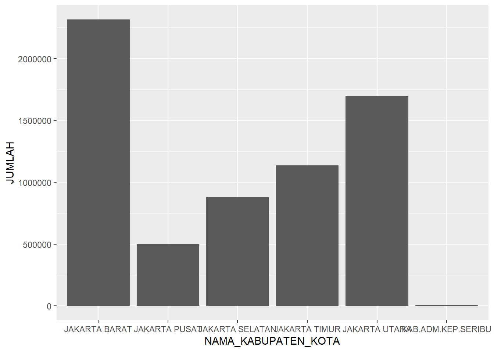

library(ggplot2)
#Ketik function ggplot() di bawah ini
ggplot()
Visualisasi data merupakan bagian yang sangat penting untuk mengkomunikasikan hasil analisa yang telah kita lakukan. Selain itu, komunikasi juga mengarahkan user untuk memperoleh gambaran terkait data selama proses analisa data sehingga mempermudah kita dalam memutuskan metode analisa apa yang dapat kita terapkan pada data tersebut.
R memiliki library visualisasi yang sangat beragam, baik yang merupakan fungsi dasar pada R maupun dari sumber lain seperti ggplot dan lattice. Seluruh library visualisasi tersebut memiliki kelebihan dan kekurangannya masing-masing.
Kita akan berfokus pada fungsi visualisasi dasar bawaan dari R yaitu ggplot2. ggplot2 merupakan sebuah library tambahan di R yang sangat populer digunakan untuk visualisasi, populer karena grafik dapat dihasilkan dengan struktur perintah yang sangat generik tetapi jelas dan rapi.
Dua huruf “g” pada ggplot2 berarti grammar of graphics. Apa itu grammar of graphics? Konsep tersebut lahir dari pemikiran Leland Wilkinson. Pada dasarnya, grammar of graphics lahir untuk menggambarkan fitur dasar yang dimiliki oleh seluruh grafik statistik. ggplot2 dibangun atas landasan tersebut dan kemudian diadaptasi dalam ekosistem R.
Konsep grammar pada grafik ini dibuat untuk memberi tahu audiens bahwa visualisasi data yang memetakan data dalam atribut estetika (baik berupa bentuk, warna, maupun ukuran) serta objek geometris (seperti titik, garis, dan batang).
Dari sini, kemudian bisa mengetahui bahwa plot pada ggplot2 menunjukkan kombinasi data (yang ingin divisualisasikan), estetika, dan geometri.
Ada empat komponen ggplot2 yaitu plot, data, aesthetic mapping dan layer.
Plot adalah komponen paling dasar di ggplot2, tanpa plot seluruh grafik tidak akan bisa ditampilkan. Dengan demikian, plot dapat dianalogikan sebagai “kanvas” gambar kita. Plot dapat dihasilkan dengan function bernama ggplot. Ingat, bedakan antara ggplot2 sebagai package dan ggplot sebagai function disini. Dan jika tidak digabungkan dengan komponen lain, maka tampilannya akan terlihat sebagai kotak persegi kosong dengan latar belakang abu-abu seperti berikut.
library(ggplot2)
#Ketik function ggplot() di bawah ini
ggplot()
Kita bisa menambahkan judul Plot dengan function labs untuk keterangan label dan title untuk judulnya
#Penambahan judul dengan menggunakan fungsi labs
ggplot() + labs(title="Jumlah Mahasiswa FEB UPN Veteran Yogyakarta")
kita juga dapat menyimpan plot sebagai variable dengan fungsi berikut :
#> Masukkan plot ke variable plot_fakultas
plot_fakultas <- ggplot()
#> Beri judul Plot
plot_fakultas <- plot_fakultas + labs(title="Jumlah Mahasiswa FEB UPN Veteran Yogyakarta")
#> Tampilkan plot
plot_fakultasFungsi labs bisa juga digunakan untuk mengisi teks pada sumbu x dan y.
#> Masukkan plot ke variable plot_fakultas
plot_fakultas<- ggplot()
#> Beri judul Plot
plot_fakultas <- plot_fakultas + labs(title="Jumlah Mahasiswa FEB UPN Veteran Yogyakarta")
#> Tambahkan label pada x dan y
plot_fakultas <- plot_fakultas + labs(x="Jurusan", y ="Jumlah Mahasiswa")
#> Tampilkan plot
plot_fakultasPlot dapat menerima input data, dan dari data tersebut bisa dipilih beberapa kolom yang akan “dipetakan” sebagai input untuk komponen visual. Untuk jelasnya, mari kita lihat datasets plotdata_kepadatan_kelurahan_dki.csv atau dapat juga diunduh pada link github materi ini. Data ini adalah Data luas wilayah dan Kependudukan Pemerintah Provinsi DKI Jakarta, Data kependudukan dipilih karena hampir seluruh organisasi, termasuk bisnis dan institusi pemerintah memerlukan ini untuk mengambil keputusan strategis. Sebagai contoh, dimana kita perlu membuka toko atau kantor cabang? atau Produk apa yang bakal laku di area tersebut?.
Setelah data dimasukkan pada plot, saatnya kita memetakan kolom yang diperlukan pada data tersebut ke elemen visual. Pemetaan ini disebut dengan aesthetic mapping.
Pada gambar terlihat banyak kolom informasi seperti TAHUN, NAMA PROVINSI, NAMA KABUPATEN/KOTA, dll.
Ada tiga kolom yang di-highlight dengan warna kuning, hijau dan biru muda. Ketiga kolom ini masing-masing akan dipetakan di dalam grafik untuk komponen visual x, y dan color (warna).
Kembali pada gambar diatas bahwa kita ingin memetakan x, y dan color ke kolom , LUAS WILAYAH (KM2), KEPADATAN (JIWA/KM2), dan NAMA KABUPATEN/KOTA
Untuk melakukan hal ini, kita gunakan function aes yang memiliki syntax berikut :
library(ggplot2)
#Membaca data csv dan dimasukkan ke variable penduduk_dki
penduduk_dki <- read.csv("data/plotdata_kepadatan_kelurahan_dki.csv", sep=",")
#> Membuat variabel plot dan aesthetic mapping
plot_dki <- ggplot(data= penduduk_dki, aes(x = LUAS_WILAYAH, y = KEPADATAN, color = NAMA_KABUPATEN_KOTA))
#> Tampilkan plot
plot_dkiTerlihat plot tidak kosong, tapi sudah terisi dengan label LUAS_WILAYAH. pada sumbu x, label KEPADATAN pada sumbu y, dan sudah ada garis-garis penjelas grid pada plot.
Plot memerlukan dua input sebagai bahan bakunya agar bisa digunakan lebih jauh, yaitu data dan aesthetic mapping (pemetaan beberapa kolom data ke elemen visual).
Untuk menggambar grafik sebenarnya pada ggplot, kita menambahkan apa yang dinamakan layer. Grafik bisa dihasilkan dengan menambahkan layer secara berlapis di atas plot.
Setiap layer terdiri dari objek-objek berikut:
Geom: Bentuk geometri seperti garis (line), batang (bar), titik (point), dan lain-lain.
Stat: Atau suatu fungsi untuk melakukan transformasi statistik terhadap data input.
Contoh paling sederhana adalah transformasi data untuk kepadatan jiwa dari angka menjadi range atau inverval per lima ribuan. Jadi data input dengan angka 8041 diubah menjadi interval angka 8001-8500. Transformasi ini disebut dengan bin. Jika kita tidak ingin mengubah apa-apa, stat yang kita gunakan adalah identity.
Position: Posisi dari beberapa data yang memiliki nilai yang sama. Jika diplot sebagai scatter plot misalnya, tentunya data-data tersebut akan menumpuk di satu titik. Apakah perlu ditambahkan nilai acak tertentu sehingga pas digambarkan, terlihat datanya lebih tersebar? Jika iya, maka ini namanya jitter. Jika kita tidak ingin merubah posisi, maka kita gunakan identity.
Berikut adalah diagram summary untuk proses menampilkan grafik dengan objek plot dan layer.
Layer bisa dihasilkan dengan menggunakan function layer dengan menambahkan syntax pada function diatas dan terdapat beberapa pilihan grafik / geom yang dapat digunakan.
**Keterangan syntax :
| Komponen | Deskripsi |
Layer |
Function yang digunakan untuk membentuk layer untuk ditambahkan pada plot |
geom |
Bentuk geometri yang digunakan untuk layer. Beberapa daftar geometri yang bisa diberikan adalah sebagai berikut:
|
stat |
Jenis transformasi untuk mengubah data dari bentuk asli ke bentuk lain. Beberapa daftar stat yang bisa digunakan antara lain adalah sebagai berikut:
|
position |
Perubahan posisi terhadap tiap titik yang terdapat pada layer. Beberapa daftar position yang bisa digunakan antara lain adalah sebagai berikut:
|
Jika kita ingin menggambar scatter plot, maka konstruksi layer yang digunakan akan berbentuk sebagai berikut:
library(ggplot2)
#Membaca data csv dan dimasukkan ke variable penduduk_dki
penduduk_dki <- read.csv("data/plotdata_kepadatan_kelurahan_dki.csv", sep=",")
#> Membuat variabel plot dan aesthetic mapping
plot_dki <- ggplot(data= penduduk_dki, aes(x = LUAS_WILAYAH, y = KEPADATAN, color = NAMA_KABUPATEN_KOTA))
#Menambahkan layer untuk menghasilkan grafik scatter plot
plot_dki + layer(geom = "point", stat = "identity", position = "identity")
Terlihat grafik titik (scatter plot) dihasilkan data-data kependudukan diambil Luas Wilayah untuk sumbu x, Kepadatan untuk sumbu y, dan color dilakukan sesuai Nama Kabupaten.
geom_pointPerintah layer untuk menggambar scatter plot memiliki shortcut function yang lebih pendek. Function tersebut bernama geom_point. Dengan demikian, fungsi layer yang sebelumnya harus diketik deklarasinya bisa hanya dengan fungsi geom_point :
library(ggplot2)
#Membaca data csv dan dimasukkan ke variable penduduk_dki
penduduk_dki <- read.csv("data/plotdata_kepadatan_kelurahan_dki.csv", sep=",")
#> Membuat variabel plot dan aesthetic mapping
plot_dki <- ggplot(data= penduduk_dki, aes(x = LUAS_WILAYAH, y = KEPADATAN, color = NAMA_KABUPATEN_KOTA))
#Menambahkan layer grafik scatter plot dengan geom_point
plot_dki + geom_point()Stat dan position tidak perlu diisi, karena fungsi geom_point ini secara otomatis akan memiliki nilai “identity” untuk stat dan position. Berbeda ketika menggunakan layer, dimana parameter stat dan position harus diisi lengkap.
Kita bisa merubah label sesuai dengan keinginan kita dan menambahkan Judul agar lebih informatif menggunakan function labs seperti materi sebelumnya.
library(ggplot2)
#Membaca data csv dan dimasukkan ke variable penduduk_dki
penduduk_dki <- read.csv("data/plotdata_kepadatan_kelurahan_dki.csv", sep=",")
#> Membuat variabel plot dan aesthetic mapping
plot_dki <- ggplot(data= penduduk_dki, aes(x = LUAS_WILAYAH, y = KEPADATAN, color = NAMA_KABUPATEN_KOTA))
#> Layer grafik scatter plot dengan geom_point dan Tambahkan judul dengan Labs
plot_dki + geom_point() + labs(title = "Luas Wilayah vs Kepadatan Penduduk DKI Jakarta", x = "Luas wilayah (km2)", y = "Kepadatan Jiwa per km2", color = "Nama Kabupaten/Kota")Histogram adalah tipe visualisasi yang sangat cocok untuk menggambarkan data distribusi dari jumlah populasi data. Dan dataset kependudukan adalah contoh yang baik dimana kita bisa menggambarkan distribusi kepadatan penduduk dengan jumlah kelurahan.
Untuk membuat histogram, kita gunakan geom bertipe histogram dan stat bin, yang bisa diwakili oleh function geom_histogram.
Secara default geom histogram tidak memerlukan aesthetic mapping untuk sumbu y, cukup menggunakan sumbu x.
Namun ada parameter yang perlu diinput, yaitu besarnya interval bin. Ini menggunakan parameter binwidth.
| Komponen | Deskripsi |
[objek plot] |
Objek plot dari hasil function ggplot() ditambah dengan komponen visual atau layer |
+ |
Tanda plus, operator untuk menambahkan komponen lain ke dalam plot |
geom_histogram |
Function untuk menghasilkan layer dengan geom histogram |
binwidth |
Lebar interval data, dalam hal ini 10000 |
library(ggplot2)
#Membaca data csv dan dimasukkan ke variable penduduk_dki
penduduk_dki <- read.csv("data/plotdata_kepadatan_kelurahan_dki.csv", sep=",")
#> Membuat variabel plot
plot_dki <- ggplot(data= penduduk_dki, aes(x = KEPADATAN))
#> Layer grafik histogram
plot_dki + geom_histogram(bindwidth = 10000)Terlihat bahwa jumlah kelurahan dengan penduduk antara 10 s/d 20 ribu adalah yang terbanyak.
Kita dapat melakukan banyak penambahan informasi pada histogram sebelumnya. Salah satunya adalah melihat porsi jumlah kelurahan berdasarkan nama kabupaten / kota pada tiap rentang histogram seperti berikut.
library(ggplot2)
#Membaca data csv dan dimasukkan ke variable penduduk_dki
penduduk_dki <- read.csv("data/plotdata_kepadatan_kelurahan_dki.csv", sep=",")
#> Membuat variabel plot dan tambahan aesthetic fill
plot_dki <- ggplot(data= penduduk_dki, aes(x = KEPADATAN, fill = NAMA_KABUPATEN_KOTA))
#> Layer grafik histogram
plot_dki + geom_histogram(bindwidth = 10000)Line chart atau grafik garis adalah tipe visualisasi yang sangat baik untuk menggambarkan apa impact (pengaruh) dari perubahan suatu variabel dari satu titik ke titik lain atau trend– dan variabel yang paling umum digunakan adalah waktu.
Sebagai contoh, di bidang ekonomi untuk menggambarkan inflasi dari bulan ke bulan. Namun tentunya tidak harus selalu waktu. Perubahan lain, misalkan pengaruh kecepatan lari dengan peningkatan detak jantung.
Untuk membuat line chart standar, kita gunakan geom bertipe “line” dan stat “identity”, yang bisa diwakili oleh function geom_line.
Pada bab berikut kita akan gunakan dataset tambahan, yaitu tingkat Inflasi bulanan tahun 2017 untuk negara Indonesia dan Singapura. (Dapat diunduh di link github Materi ini). Selain plotting, ada juga konsep factoring untuk menangani data dan grouping untuk grafik.
library(ggplot2)
#Membaca data csv dan dimasukkan ke variable inflasi_indo_sgp
inflasi_indo_sgp <- read.csv("data/inflasi_idn_sgp_2017.csv", sep=",")
#Menambahkan data dan aesthetic mapping
plot_inflasi <- ggplot(data = inflasi_indo_sgp, aes(x = Bulan, y = Inflasi, color = Negara))
#Menambahkan layer line chart
plot_inflasi + geom_line()Maka akan muncul tampilan grafik berupa plot kosong.
Ini artinya sistem kebingungan karena tiap Bulan pada sumbu x memiliki dua data (observation) yang akan menjadi kendala karena tiap line perlu satu titik data untuk sumbu x dan y.
Kondisi ini akan kita perbaiki dengan function grouping , Ini karena kita belum membagi data dengan aesthetic grouping, Walaupun pada syntax sebelumnya kita sudah memiliki aesthetic color (Negara) yang membagi Indonesia dan Singapura, tapi kita masih perlu memiliki aesthetic group seperti berikut:
library(ggplot2)
#Membaca data csv dan dimasukkan ke variable inflasi_indo_sgp
inflasi_indo_sgp <- read.csv("data/inflasi_idn_sgp_2017.csv", sep=",")
#Menambahkan data, aesthetic mapping dan grouping
plot_inflasi <- ggplot(data = inflasi_indo_sgp, aes(x = Bulan, y = Inflasi, color = Negara, group = Negara))
#Menambahkan layer line chart
plot_inflasi + geom_line()terlihat bahwa teks Bulan pada sumbu x masih dalam urutan yang salah.
Urutan bulan yang salah karena masalah pengurutan internal di sistem R, yang mengurutkan berdasarkan alphabet. Kita dapat secara manual merubah urutan ini dengan factor dan parameter levels dimasukkan manual.
Dengan data bulan dari Jan s/d Oct 2017 maka konstruksi factor adalah sebagai berikut.
library(ggplot2)
#Membaca data csv dan dimasukkan ke variable inflasi_indo_sgp
inflasi_indo_sgp <- read.csv("data/inflasi_idn_sgp_2017.csv", sep=",")
#> Factoring urutan Bulan berdasarkan kalender
inflasi_indo_sgp$Bulan = factor(inflasi_indo_sgp$Bulan, levels = c("Jan-2017", "Feb-2017", "Mar-2017", "Apr-2017", "May-2017", "Jun-2017", "Jul-2017", "Aug-2017", "Sep-2017", "Oct-2017"))
#Menambahkan data, aesthetic mapping dan grouping
plot_inflasi <- ggplot(data = inflasi_indo_sgp, aes(x = Bulan, y = Inflasi, color = Negara, group = Negara))
#Menambahkan Layer dan labels
plot_inflasi + geom_line() + geom_text(aes(label = Inflasi),hjust=-0.2, vjust=-0.5)Pada code ini juga ditambahkan layer geom_text yang digunakan untuk menandai label-label nilai pada titik di line chart.
Untuk menghasilkan bar chart kita bisa gunakan function geom_bar. Function ini akan menghasilkan sebuah layer untuk kita tambahkan ke plot. Secara default, stat yang digunakan oleh geom_bar adalah count sehingga bar chart hanya akan menghitung jumlah baris data point per x,
Kali ini kita menggunakan datasets Demografi DKI Tahun 2013 (dapat diunduh di link github modul)
Kita akan mem-plot bar chart, dimana aesthetic y menggunakan stat penjumlahan (sum) - bukan count - dari data kepadatan penduduk. Ini bisa dilakukan dengan mengisi dua hal berikut:
Mengisi aesthetic y dengan kolom grouping yang kita inginkan - yaitu kolom bernama JUMLAH - pada plot (ggplot).
Mengisi parameter stat dengan nilai identity pada bagian layer (geom_bar).
library(ggplot2)
#Membaca data csv dan dimasukkan ke variable penduduk_dki
penduduk_dki <- read.csv("data/data_demografi_dki.csv", sep=",")
#Menghasilkan bar chart
#Membuat plot demografi
plot_demografi_dki <- ggplot(data=penduduk_dki, aes(x = NAMA_KABUPATEN_KOTA, y = JUMLAH))
#Menambahkan layer Bar Chart
plot_demografi_dki + geom_bar(stat = "identity")
Position DodgePada subbab sebelumnya, kita melihat efek pergantian nilai stat pada geom_bar dari count (nilai default) menjadi identity untuk mendapatkan total penjumlahan dari angka jumlah penduduk. Sekarang kita bisa lebih memperbaiki bar chart kita dengan informasi grouping. Untuk melakukan hal ini, ada dua hal yang mesti kita lakukan:
Aesthetic fill pada objek plot perlu diberikan input kolom JENIS_KELAMIN.
Agar data antara Laki-laki dan Perempuan tidak menjadi satu bar, position pada layer kita isi dengan nilai dodge – dimana objek satu dengan objek yang lain diposisikan bersisian.
library(ggplot2)
#Membaca data csv dan dimasukkan ke variable penduduk_dki
penduduk_dki <- read.csv("data/data_demografi_dki.csv", sep=",")
#Membuat plot demografi
plot_demografi_dki <- ggplot(data=penduduk_dki, aes(x = NAMA_KABUPATEN_KOTA, y = JUMLAH, fill = JENIS_KELAMIN))
#Bagian penambahan layer Bar Chart, posisi fill bersampingan
plot_demografi_dki + geom_bar(stat="identity", position = "dodge")Terlihat bar chart ini telah memiliki informasi jumlah penduduk, dengan series berdasarkan jenis kelamin dan kemudian dikategorikan berdasarkan nama kabupaten / kota.
FacetingFaceting pada ggplot2 adalah:
Proses pembagian dataset menjadi potongan beberapa subset data.
Function untuk menghasilkan visualisasi dari potongan-potongan tersebut.
Bertujuan agar data lebih mudah dimengerti.
Ada dua function untuk facet, yaitu facet_wrap dan facet_grid. Kedua function tersebut fungsinya sama, yaitu membagi subset menjadi layout kotak matrix seperti pada contoh di teks pengenalan.
Function facet_grid memerlukan dua variabel untuk membagi dataset. Sedangkan function facet_wrap hanya memerlukan satu variabel, dataset dibagi berdasarkan jumlah kolom yang diinginkan.
Facet Wrap Scatter PlotBerikut adalah penjelasan lengkap elemen-elemen function nya :
| Komponen | Deskripsi |
facet_wrap |
Fungsi faceting pada ggplot2 |
~ NAMA.KABUPATEN.KOTA |
Facet wrap hanya menggunakan satu variabel saja. Dan variabel yang digunakan diletakkan di sebelah kanan tanda ~. |
ncol=2 |
Jumlah kolom pembagian adalah 2 |
Kita akan ambil scatter plot pada subbab diatas sebelumnya untuk dataset kependudukan dan kita bagi menjadi berdasarkan variabel NAMA_KABUPATEN_KOTA dan 2 kolom dengan facet_wrap.
library(ggplot2)
#Membaca data csv dan dimasukkan ke variable penduduk_dki
penduduk_dki <- read.csv("data/plotdata_kepadatan_kelurahan_dki.csv", sep=",")
#> Membuat variabel plot dan aesthetic mapping
plot_dki <- ggplot(data= penduduk_dki, aes(x = LUAS_WILAYAH, y = KEPADATAN, color = NAMA_KABUPATEN_KOTA))
#> Layer grafik scatter plot dengan geom_point dan Tambahkan judul dengan Labs
plot_dki <- plot_dki + geom_point() + labs(title = "Luas Wilayah vs Kepadatan Penduduk DKI Jakarta", x = "Luas wilayah (km2)", y = "Kepadatan Jiwa per km2", color = "Nama Kabupaten/Kota")
#> Fungsi Faceting dengan membagi 2 colom
plot_dki + facet_wrap(~ NAMA_KABUPATEN_KOTA, ncol = 2)Terlihat kepadatan untuk Jakarta Pusat sangat tidak berimbang dibandingkan kabupaten lainnya di DKI Jakarta.
Facet Wrap HistogramDengan menggunakan function yang sama kita juga bisa memecah histogram menjadi facet grafik.
library(ggplot2)
#Membaca data csv dan dimasukkan ke variable penduduk_dki
penduduk_dki <- read.csv("data/plotdata_kepadatan_kelurahan_dki.csv", sep=",")
#> Membuat variabel plot dan tambahan aesthetic fill
plot_dki <- ggplot(data= penduduk_dki, aes(x = KEPADATAN, fill = NAMA_KABUPATEN_KOTA))
#> Penamaan label Plot
plot_dki <- plot_dki + labs(x="Kepadatan Jiwa (km2)", y="Jumlah Kelurahan", color="Kabupaten/Kota")
#> Layer grafik histogram
plot_dki <- plot_dki + geom_histogram(bindwidth = 10000)
#> Fungsi Faceting dengan membagi 2 colom berdasarkan Kabupaten/Kota
plot_dki + facet_wrap(~ NAMA_KABUPATEN_KOTA, ncol = 2)